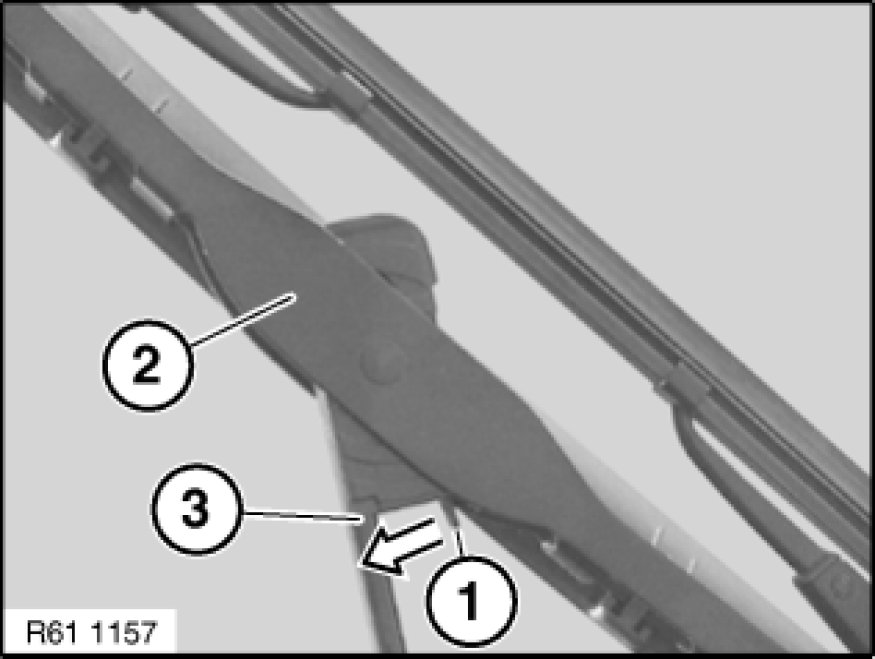

Replacing Both Windscreen Wiper Blades
61 61 041 - Replacing both windscreen wiper blades

Move wipers into fold-back position:
- Switch on terminal "R".
- Actuate wiper control lever and bring wiper arms to a stop in vertical position (fold-back position) by switching off terminal "R".
- Remove ignition key from ignition switch.

Fold back wiper arm (3).
Press locking spring (1) in direction of arrow. Pull wiper blade (2) to wiper arm (3) and feed out.
Installation:
Install new wiper blade and snap into place.
Fold wiper arms to windscreen.

Important!
Before switching on terminal "R" or the ignition or starting the engine, you must fold the wiper arms onto the windscreen otherwise damage will be caused.
Switch on terminal "R".
Set wiper system to rest position by flick-wiping.